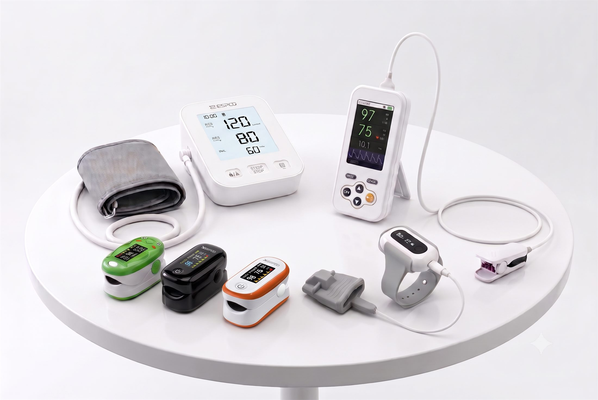

YIMILIFE / MEDICAL DEVICE OEM & ODM
Medical devices.
Built around
your brand.
Explore our product families for your next OEM/ODM project.

现有官网图片 · 五大品类组合主视觉后续更新01 / PRODUCT PORTFOLIO
Find your product family.
Explore five product families for your next OEM/ODM project.


02 / ABOUT YIMILIFE
A team behind
your product.
YimiLife is a B2B medical device manufacturer serving overseas healthcare brands, distributors and OEM/ODM customers.
Founded in 2017 in Shenzhen, we bring together in-house product development and manufacturing, with a focus on well-designed products at competitive prices.
[公司或团队环境图]资料后填 / IMAGE PLACEHOLDER
03 / RESEARCH & DEVELOPMENT
Inside our development work.
[研发团队工作场景主图]资料后填 / IMAGE PLACEHOLDER
People, facilities & experience.
Our in-house R&D team is responsible for end-to-end product development across the YimiLife portfolio.
[实验室及设备用途图]资料后填 / IMAGE PLACEHOLDER
[专利墙或专利文件]资料后填 / IMAGE PLACEHOLDER
[生产线主图]资料后填 / IMAGE PLACEHOLDER
04 / MANUFACTURING & QUALITY
See how your product
is made.
Explore our production and assembly environment, inspection activities and quality-management information.
ProductionProduct assembly
VerificationProduction inspection
QualityQuality management
05 / OEM PROJECTS
From a requirement
to a real project.
[真实项目或定制产品图]资料后填 / IMAGE PLACEHOLDER
[项目类型 / 客户信息按可公开程度填写]
[真实 OEM 项目标题]
01 / REQUIREMENT
客户需求
[真实项目背景与需求]
02 / OUR WORK
我们完成的工作
[实际定制或开发内容]
03 / OUTCOME
实际阶段或结果
[有记录可核实的结果]
客户原话作为可选模块，取得真实反馈后再加入。